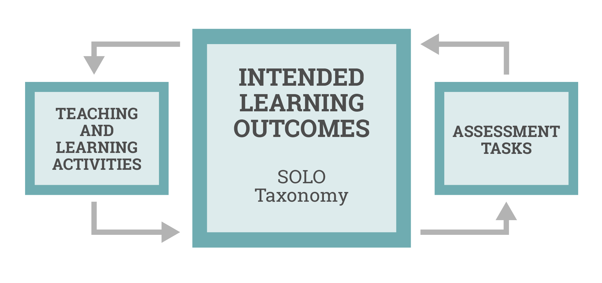

Constructive Alignment
Introduction
In the quest to bridge the gap between the classroom and home practice, an effective pedagogical framework is paramount. Constructive Alignment is one such framework that holds promise for deciding on the content within PracticeQuest.
Constructivism is a theory of learning that emphasises the learner's active role in constructing their own knowledge (Biggs, 1996). When learning a musical instrument, students actively engage in the process of understanding musical concepts, mastering techniques, and interpreting compositions. They explore, experiment, and build their musical competence through practice and reflection, all of which are fundamental tenets of constructivist learning. Consequently, the nature of learning a musical instrument resonates with the constructivist philosophy, making it an ideal domain to apply Constructive Alignment.
Alignment is a critical component of effective education, as it ensures that students engage in activities that match the level of learning they aim to achieve. Furthermore, alignment guarantees that assessments measure their ability to demonstrate the desired learning outcomes (Biggs et al., 2022). In music education, where learners construct their musical knowledge, this alignment is paramount. It ensures that the learning experiences provided are in harmony with the goals and outcomes envisioned for students, promoting meaningful and targeted musical growth.
This section will systematically explore the three components of Constructive Alignment to determine the content within PracticeQuest.
Intended Learning Outcomes
In music education, Intended Learning Outcomes (ILOs) play a crucial role in guiding the teaching and learning process. They are clear, specific statements that define what students are expected to know, understand, or be able to do upon completing a learning activity or course (Biggs et al., 2022).
The SOLO taxonomy is a valuable framework that can greatly enhance the quality of education by promoting deeper learning and critical thinking (Biggs et al., 2022). As Scott (2000) observed, students who grasp the importance of recognising relationships among various aspects of a problem tend to perform better, especially when compared to those who rely on single strategies or employ multiple strategies in isolation.
SOLO serves as a versatile tool for crafting music education ILOs. Music encompasses a multifaceted landscape of concepts, from theory and technique to interpretation of compositions. Therefore, embracing SOLO can offer a pathway to identify and use music theory elements, and to understand the abstract relationships between them.
Below are examples of ILOs tailored to each stage of the SOLO Taxonomy, designed for two common learning pathways for early piano students.
| A single octave C major scale, playable with both hands | A piece played with both hands on middle C position featuring melodic and harmonic intervals up to fifths | |
|---|---|---|
| Prestructural | Recognise the term "C major scale" and identify that it's related to music. | The student will recognize the piece as a musical piece and identify its association with playing music. |
| Unistructural | Name the notes of the C major scale, identify its fingering pattern, and understand its basic musical significance. | The student will identify the C position on the piano and describe the hand positioning for playing the piece. |
| Multistructural | The student will list the notes of the C major scale, demonstrate the correct fingering, and explain its relationship with the key of C major. | The student will play the piece with both hands using the C position and identify intervals used in the piece. |
| Relational | Play the C major scale with accuracy and fluency, understand the intervals between notes, and recognise the scale's use in musical context. | The student will play the piece with fluency, demonstrating an understanding of the harmonic and melodic intervals within the piece. |
| Extended Abstract | Proficiently play the C major scale, apply it to improvisation, compose melodies using the scale, and explain the theoretical concepts related to scales, such as key signatures. | The student will proficiently play the piece with both hands, demonstrating hand-eye coordination and interpreting the piece expressively. They will identify the role of intervals in the composition and apply this knowledge to other musical pieces in the same key. |
PracticeQuest aims to address the majority of these stages, although occasionally it may become overly abstract, necessitating the regular face-to-face lessons.
Teaching and Learning Activities
To implement Constructive Alignment effectively, it's crucial to understand that teaching and learning activities should be strategically designed to align with the intended learning outcomes. As emphasised in the literature (Biggs et al., 2022), these activities need to engage students actively, promote diversity and challenge, and offer opportunities for practicing and application.Furthermore, the activities should align with the specific learning outcomes and maintain a balance between challenge and achievability. Additionally, it's essential to incorporate authentic and real-world scenarios to motivate students and enhance their retention, coupled with providing timely feedback to aid their skill development.
With this understanding, the following tables will delve into the specific learning activities presented via PracticeQuest for the two pathways mentioned earlier.
C Major Scale Activities
| Intended Learning Outcomes | Teaching and Learning Activity | |
|---|---|---|
| Prestructural | Recognise the term "C major scale" and identify that it's related to music. | A video introducing and playing the C major scale. It starts on C, ends on C, and includes all the white keys in between |
| Unistructural | Name the notes of the C major scale, identify its fingering pattern, and understand its basic musical significance. | A video that identifies the notes of the C major scale and the fingering pattern on both hands |
| Multistructural | The student will list the notes of the C major scale, demonstrate the correct fingering, and explain its relationship with the key of C major. | A video that shows the correct performance of a C major scale and explains that the C major scale represents the key of C major - no sharps or flats |
| Relational | Play the C major scale with accuracy and fluency, understand the intervals between notes, and recognise the scale's use in musical context. | Too abstract for PQ |
| Extended Abstract | Proficiently play the C major scale, apply it to improvisation, compose melodies using the scale, and explain the theoretical concepts related to scales, such as key signatures. | Too abstract for PQ |
Music Piece Activities
| Intended Learning Outcomes | Teaching and Learning Activity | |
|---|---|---|
| Prestructural | The student will recognize the piece as a musical piece and identify its association with playing music. | A video demonstrating the piece |
| Unistructural | The student will identify the C position on the piano and describe the hand positioning for playing the piece. | A video guiding students through finding middle C and placing fingers on the right spot |
| Multistructural | The student will play the piece with both hands using the C position and identify intervals used in the piece. | An interactive video that reminds students of intervals and asks students to identify some within the piece |
| Relational | The student will play the piece with fluency, demonstrating an understanding of the harmonic and melodic intervals within the piece. | An interactive video that steps through the song one bar at a time, stopping after each bar and prompting the student to play. Also a reference video wtih counts and clicks |
| Extended Abstract | The student will proficiently play the piece with both hands, demonstrating hand-eye coordination and interpreting the piece expressively. They will identify the role of intervals in the composition and apply this knowledge to other musical pieces in the same key. | A reference video of the piece played to performance standard |
Assessment Tasks
Demonstrations of understanding can take many different forms, such as writing essays, solving problems, or giving presentations (Biggs et al., 2022). For music, this traditionally occurs via performances and a demonstration of music theory knowledge. Our approach for PracticeQuest draws inspiration from both formative and summative assessments, strategically tailored to align with the ILOs. The following design decisions for our assessment tasks take inspiration from Larson and Lockee (2014) and Biggs et al. (2022).
Formative assessments play a pivotal role in students' daily at-home practice, offered through engaging quizzes and interactive exercises. These ongoing evaluations provide students with timely and informative feedback, enabling them to reflect on their progress, recognise areas in need of improvement, and fine-tune their practice routines. Such assessments not only inform students of their current standing but also serve as self-assessment tools that foster a sense of autonomy and responsibility in their learning journey. Self assessment can help students to: Develop a better understanding of their own strengths and weaknesses, identify strategies for improving their performance, developing their reflection skills, and encourages students to take ownership of their learning (Panadero et al., 2016)
When students return to the traditional classroom setting, they face summative assessments that mark the culmination of their efforts from the week of self-guided practice. These assessments serve as a measure of their overall growth and proficiency.
A range of assessment methods will be used to diversify the student's experience with PracticeQuest, encompassing various quiz formats, interactive content, and state-of-the-art AI-powered music practice apps. Research by Chen (2020) and Wang (2023) has explored AI-powered educational tools capable of offering real-time feedback during music practice. This highlights the potential for PracticeQuest to enhance assessment feedback with AI-powered features.
The subsequent tables showcases the Intended Learning Outcomes, learning/teaching activities, as well as assessments for our two examples.
C Major Scale Alignment
| Intended Learning Outcomes | Teaching and Learning Activity | Assessment | |
|---|---|---|---|
| Prestructural | Recognise the term "C major scale" and identify that it's related to music. | A video introducing and playing the C major scale. It starts on C, ends on C, and includes all the white keys in between | A quiz that asks if a highlighted key on the keyboard is part of the C major scale |
| Unistructural | Name the notes of the C major scale, identify its fingering pattern, and understand its basic musical significance. | A video that identifies the notes of the C major scale and the fingering pattern on both hands | A quiz where students drag numbers into the correct fingering order for a specific hand and the correct order of notes of the scale |
| Multistructural | The student will list the notes of the C major scale, demonstrate the correct fingering, and explain its relationship with the key of C major. | A video that shows the correct performance of a C major scale and explains that the C major scale represents the key of C major - no sharps or flats | A quiz asking the relationship between the C major scale and the key of C major. Then listens to the student play, targeting only pitch |
| Relational | Play the C major scale with accuracy and fluency, understand the intervals between notes, and recognise the scale's use in musical context. | Too abstract for PQ | Listens to the student perform the scale, targetting pitch and rhythm |
| Extended Abstract | Proficiently play the C major scale, apply it to improvisation, compose melodies using the scale, and explain the theoretical concepts related to scales, such as key signatures. | Too abstract for PQ | Too abstract for PQ, technology required may be too advanced |
Music Piece Alignment
| Intended Learning Outcomes | Teaching and Learning Activity | Assessment | |
|---|---|---|---|
| Prestructural | The student will recognize the piece as a musical piece and identify its association with playing music. | A video demonstrating the piece | A quiz asking for the piece's name, and if it is fast or slow (precursor to tempo) and happy or sad (precursor to key) |
| Unistructural | The student will identify the C position on the piano and describe the hand positioning for playing the piece. | A video guiding students through finding middle C and placing fingers on the right spot | A quiz that has students dragging finger numbers to the correct spot on the virtual keyboard |
| Multistructural | The student will play the piece with both hands using the C position and identify intervals used in the piece. | An interactive video that reminds students of intervals and asks students to identify some within the piece | Between video stops, the student is to enter the interval that the video is refering to |
| Relational | The student will play the piece with fluency, demonstrating an understanding of the harmonic and melodic intervals within the piece. | An interactive video that steps through the song one bar at a time, stopping after each bar and prompting the student to play. Also a reference video wtih counts and clicks | Between video stops, the student attempts the song one bar at a time. Technology required for monitoring may be too advanced |
| Extended Abstract | The student will proficiently play the piece with both hands, demonstrating hand-eye coordination and interpreting the piece expressively. They will identify the role of intervals in the composition and apply this knowledge to other musical pieces in the same key. | A reference video of the piece played to performance standard | Too abstract for PQ, technology required may be too advanced |
Conclusion
In conclusion, Constructive Alignment underpins the core structure of PracticeQuest. This framework ensures alignment of ILOs, activities, and assessments. Embracing the principles of Constructive Alignment, PracticeQuest prioritises technology-integrated assessments, enhancing the overall learning journey.